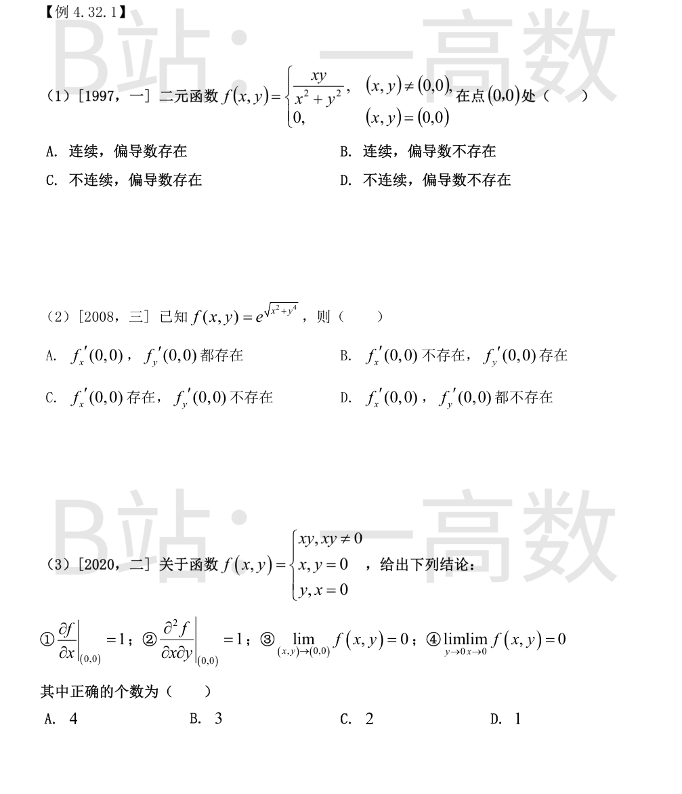
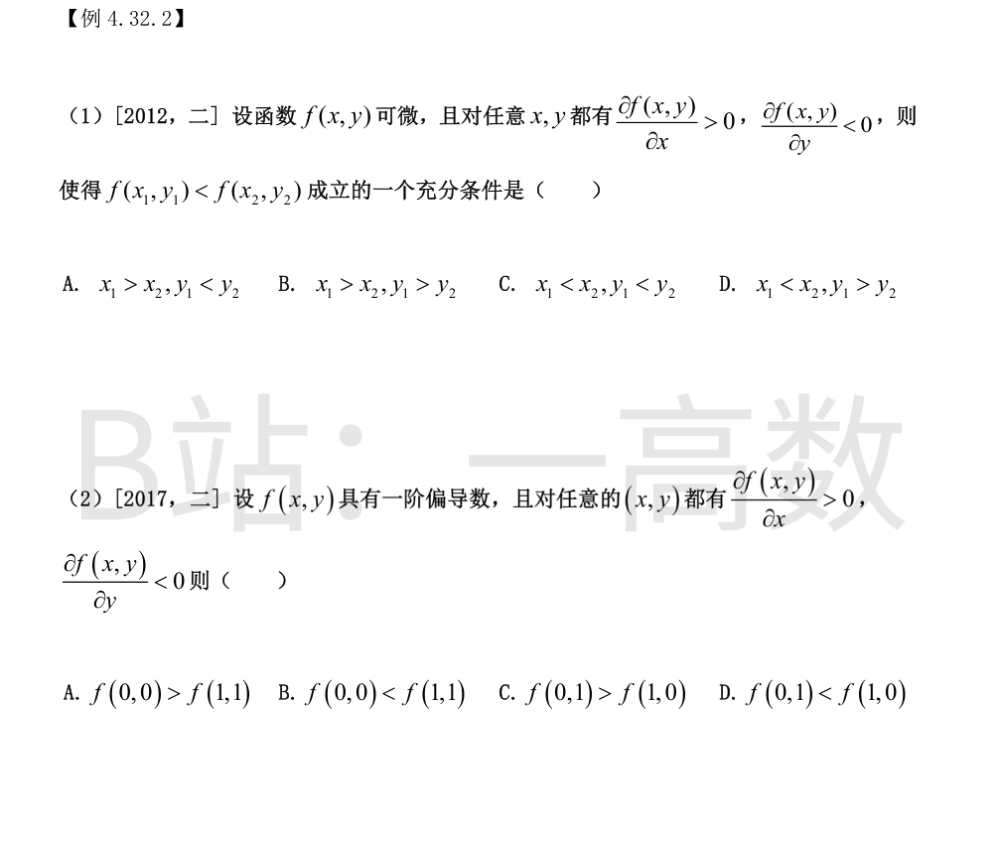
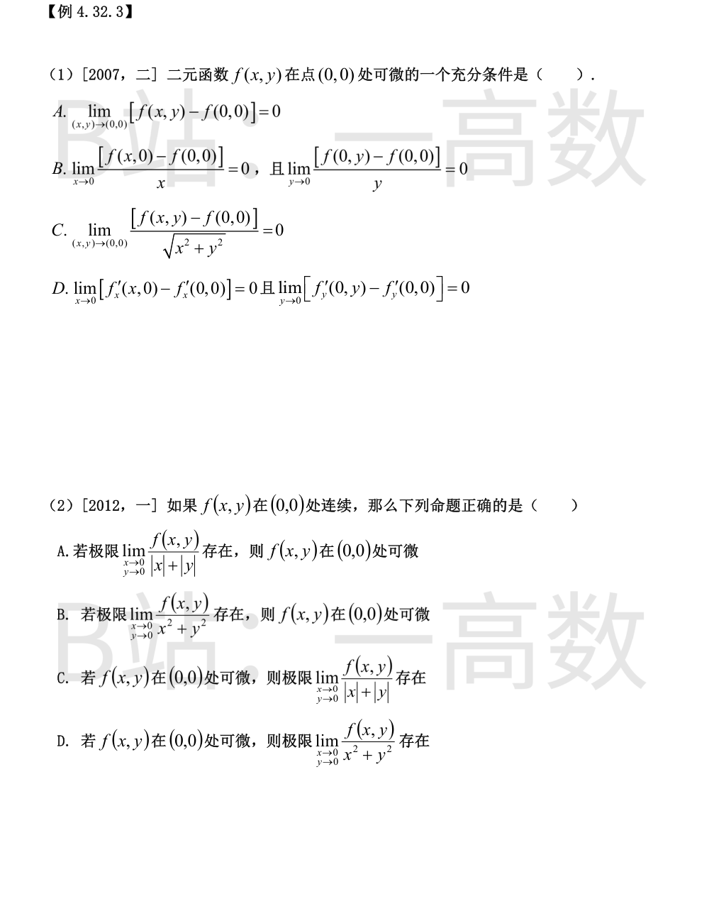
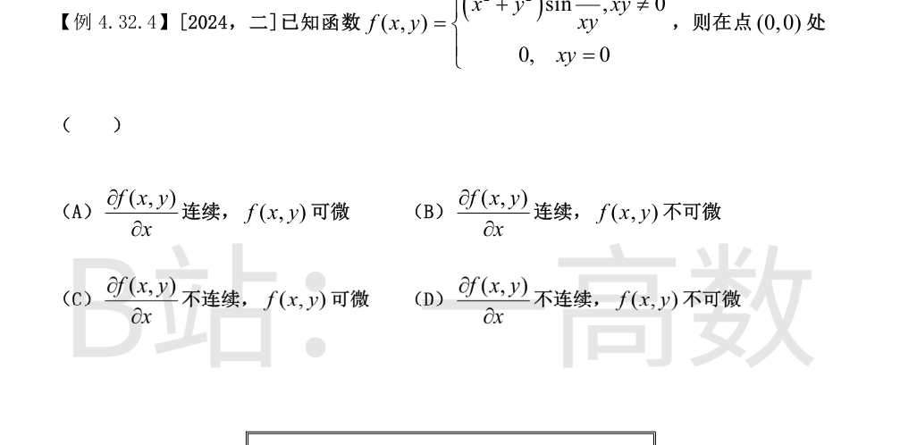
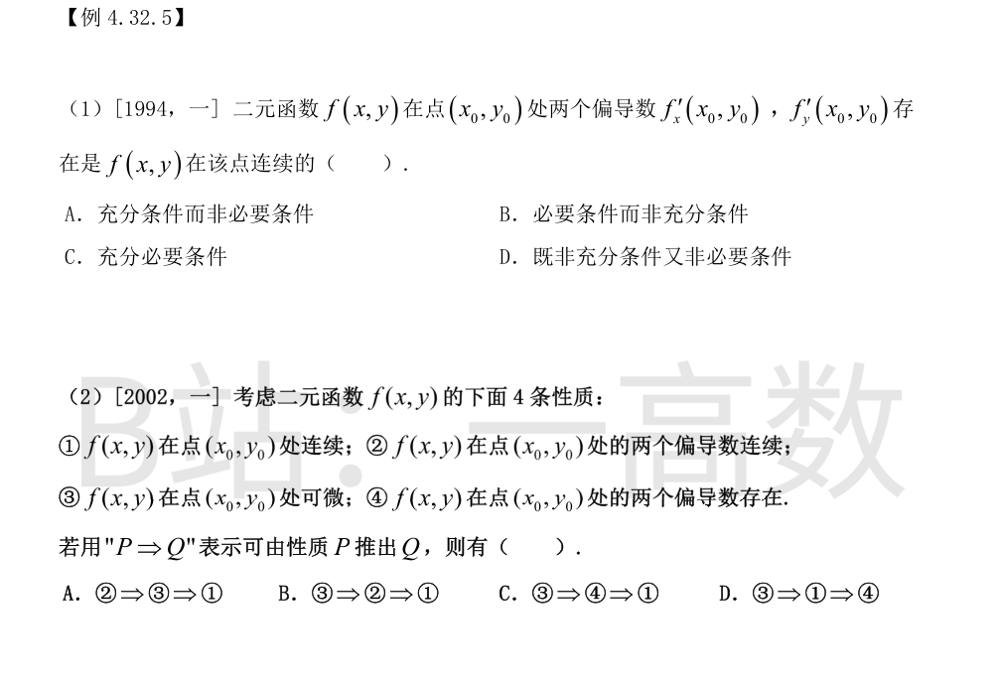

连续性：沿直线 y=kx 趋于原点，f(x,kx)=kx²/[x²(1+k²)]=k/(1+k²) 与 k 有关（如 y=0 时极限 0，y=x 时极限 1/2），故极限不存在，f 在 (0,0) 不连续。
偏导数：$$f_x'(0,0)=\lim_{x\to0}\frac{f(x,0)-f(0,0)}{x}=\lim_{x\to0}\frac{0}{x}=0$$ 同理 f_y'(0,0)=0，两个偏导数都存在。
故不连续但偏导数存在，选C。
$$f_x'(0,0)=\lim_{x\to0}\frac{e^{\sqrt{x^2}}-1}{x}=\lim_{x\to0}\frac{e^{|x|}-1}{x}$$
右极限 lim_{x→0⁺}(e^x−1)/x=1，左极限 lim_{x→0⁻}(e^{−x}−1)/x=−1，不相等，f_x'(0,0) 不存在。
$$f_y'(0,0)=\lim_{y\to0}\frac{e^{\sqrt{y^4}}-1}{y}=\lim_{y\to0}\frac{e^{y^2}-1}{y}=\lim_{y\to0}\frac{y^2}{y}=0\ \text{存在}$$
选B。
①：y=0 时 f(x,0)=x，$$\left.\frac{\partial f}{\partial x}\right|_{(0,0)}=\lim_{x\to0}\frac{f(x,0)-f(0,0)}{x}=\frac{x}{x}=1$$ 正确。
②：对 y≠0，$$f_x'(0,y)=\lim_{x\to0}\frac{f(x,y)-f(0,y)}{x}=\lim_{x\to0}\frac{xy-y}{x}=\lim_{x\to0}y\frac{x-1}{x}$$ 该极限不存在（x→0 时发散），故 f_x'(0,y)（y≠0）不存在，进而 ∂²f/∂x∂y|(0,0)=lim_{y→0}[f_x'(0,y)−f_x'(0,0)]/y 无意义，②错误。
③：无论沿哪条路径趋于原点，f 取值为 xy、x 或 y 三者之一，都趋于 0，故二重极限存在且为 0，③正确。
④：固定 y≠0 时 lim_{x→0}f(x,y)=lim xy=0，再令 y→0 得 0，④正确。
正确的为①③④，共3个，选B。

f 对 x 严格增、对 y 严格减。要保证 f(x₁,y₁)<f(x₂,y₂)，应让 x₁<x₂（增方向占优）且 y₁>y₂（y₁ 大使 f 值更小）：
f(x₁,y₁)≤f(x₂,y₁)（x₁<x₂，严格增）<f(x₂,y₂)（y₁>y₂，对 y 严格减）。
A 两个方向都反了（实际给出反向不等式的充分条件）；B、C 各有一项方向相反，均为混合情形不能保证。选D。
固定 y=0：g(x)=f(x,0) 满足 g'(x)=f_x'(x,0)>0，严格增，故 f(0,0)<f(1,0)。
固定 x=0：h(y)=f(0,y) 满足 h'(y)=f_y'(0,y)<0，严格减，故 f(0,1)<f(0,0)。
串联得 f(0,1)<f(0,0)<f(1,0)，即 f(0,1)<f(1,0) 恒成立，D 正确。
A、B 涉及 f(1,1)：f(1,1) 与 f(1,0) 的比较需 ∂f/∂y 的积分（变号未知），与 f(0,0) 的比较亦不确定，无法保证。C 与推导矛盾。选D。

C 选项给出 lim_{(x,y)→(0,0)}[f(x,y)−f(0,0)]/√(x²+y²)=0，即 f(x,y)−f(0,0)=o(ρ)。取 A=B=0，则 f(x,y)−f(0,0)=0·x+0·y+o(ρ)，恰符合可微定义，故 C 是充分条件（此时 f_x'(0,0)=f_y'(0,0)=0）。
A 只是 f 在 (0,0) 连续，推不出可微。
B 只保证两个偏导数存在且为 0（偏导存在≠可微，如 f=√|xy| 的反例类型）。
D 只给出偏导数沿两条坐标轴方向趋于该点处的值，不是偏导数在该点邻域连续，推不出可微。
选C。
B：设 lim f/(x²+y²)=L（存在），分母→0 故分子必→0，由连续性 f(0,0)=0，且 f(x,y)=L(x²+y²)+o(ρ²)。于是
$$f(x,y)-f(0,0)=L(x^2+y^2)+o(\rho^2)=o(\rho)$$
即 f(x,y)=f(0,0)+0·x+0·y+o(ρ)，f 在(0,0)可微（f_x'=f_y'=0）。B 正确。
A：反例 f=|x|+|y|，lim f/(|x|+|y|)=1 存在，但 f 在原点不可微。
C：反例 f=x（可微），x/(|x|+|y|) 沿 x 轴正负两侧分别趋于 ±1，极限不存在。
D：反例 f=x，x/(x²+y²) 沿 x 轴趋于 ∞，极限不存在。
选B。
（附注：本组第二张图片 k32_T3_1.png 仅为下一例【例4.32.4】分段函数定义开头的残片，无独立新题。）

可微性：f_x'(0,0)=lim_{x→0}[f(x,0)−f(0,0)]/x=0（x 轴上 f≡0），同理 f_y'(0,0)=0，且
$$\frac{|f(x,y)-f(0,0)-0\cdot x-0\cdot y|}{\sqrt{x^2+y^2}}=\sqrt{x^2+y^2}\,\big|\sin\tfrac1{xy}\big|\le\sqrt{x^2+y^2}\to0$$
故 f 在 (0,0) 可微。
偏导连续性：xy≠0 时
$$f_x'=2x\sin\frac{1}{xy}-\frac{x^2+y^2}{x^2y}\cos\frac{1}{xy}$$
沿 y=x 趋于原点，第二项为 −(2/x)cos(1/x²)，无界振荡，lim f_x' 不存在，故 ∂f/∂x 在 (0,0) 处不连续。
综上选C。

不充分：f=xy/(x²+y²)（(x,y)≠(0,0)），f(0,0)=0，两偏导在原点都存在（均为0），但沿 y=x 极限为 1/2≠0，不连续。
不必要：f=√(x²+y²) 在原点连续，但 f_x'(0,0)=lim_{x→0}|x|/x 不存在。
故既非充分又非必要，选D。
基本关系链：②偏导连续 ⟹ ③可微 ⟹ ①连续；③ ⟹ ④偏导存在。而 ④⇏①（f=xy/(x²+y²) 反例），①⇏④（f=√(x²+y²) 反例），③⇏②（存在可微但偏导不连续的函数）。
A：②⇒③⇒①，每一步成立，正确。
B：③⇒② 不成立。C：③⇒④ 成立但 ④⇒① 不成立。D：③⇒① 成立但 ①⇒④ 不成立。
选A。